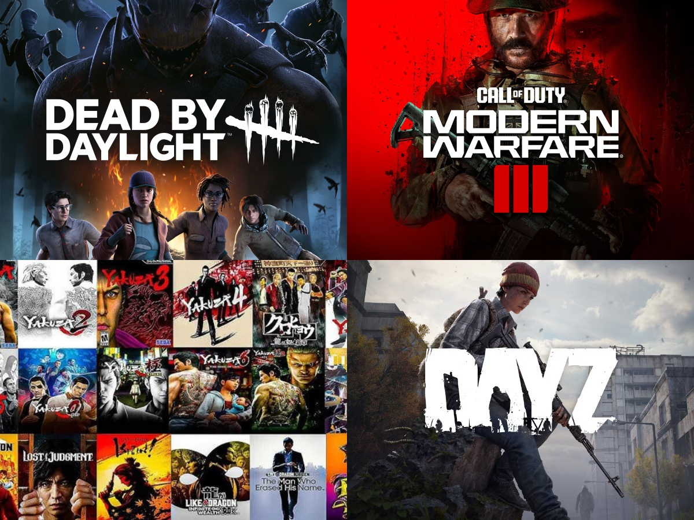

Gaming
I grew up gaming, and it was a pretty big part of my childhood. It's always been one of my escapes in life, and it's also been something I've always been good at, no matter what type of game. It all started with my first console, which was a Playstation 2. I'd come home after school, and be so excited to hop on Jak and Daxter.
Games can be competitive, and that is where I truly get the thrill from it. I always try to hit the highest I can in every game I play, and by doing that I definitely always am better than the average player and most pros that people know of. Of course though, I do have my single player laid back games that I also enjoy, but when it comes to being competitive, that's where the fun really is for me.
My Favorite Games
Here are some of the games I enjoy the most:
- Call Of Duty: Modern Warfare 3
- DayZ
- Dead By Daylight
- Yakuza Series

Image created by me using cover art from games mentioned on this page.
My PC Build
Custom PCs are usually better for people who want to choose their own parts and understand what is inside their system. I like that a custom build gives more control over performance, cooling, upgrades, and overall quality. I usually always try my best to keep up with the latest parts, and try to get my hands on them as well.
Of course, after all this talk about Custom PCs, I'm going to attach my Buildcores PC link to show the kind of setup I own.